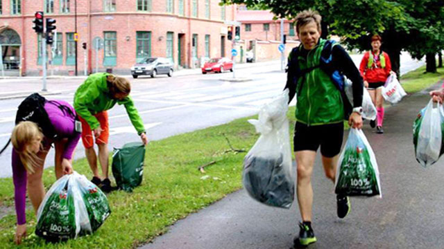

러닝 가이드에 오신 것을 환영합니다
플로깅 러닝을 안전하고 즐겁게 하기 위해 꼭 알아야 할 내용과 꿀팁을 소개합니다.
건강과 환경을 동시에 챙기는 최고의 운동법을 경험하세요!
1. 시작 전 꼭 준비하세요
- 충분한 스트레칭으로 몸을 풀어주세요.
- 쿠션 좋은 러닝화를 착용해 무릎 부상 방지.
- 운동복은 땀 배출이 좋은 기능성 소재 선택.
- 밤에는 반드시 반사조끼와 조명을 꼭 챙기세요.
2. 러닝 시 주의사항
TIP: 항상 주변 환경을 주시하며 안전 우선!
- 교통신호를 준수하며 인도나 안전한 도로에서 달리기.
- 과도한 속도나 무리한 달리기는 피하세요.
- 피로 시에는 운동을 중단하고 꼭 휴식을 취하세요.
- 친구와 함께 달리면 더 안전하고 즐거워요.
3. 플로깅과 환경 보호
플로깅은 쓰레기를 줍는 활동과 러닝을 결합하여 건강한 환경도 지켜주는 활동입니다.

- 플라스틱, 금속캔, 종이 등 분리 배출 꼭 지키기.
- 쓰레기 봉투는 단단히 묶어 환경오염 예방하기.
- 자연 보호 구역에선 쓰레기 외 환경 훼손 주의.
4. 목표 설정과 기록
앱 내 목표 설정 기능 활용으로 동기 부여 및 달성도를 높이세요.
- 일간, 주간, 월간 목표를 세워 꾸준함 유지.
- 달린 거리와 줍는 쓰레기 양을 기록하고 확인.
- 이루고 싶은 목표에 대한 간단한 메모도 활용 가능.
5. 자주 묻는 질문(FAQ)
부상 없이 안전한 러닝 방법은?
충분한 워밍업과 쿨다운, 무리하지 않는 페이스 조절이 중요합니다.
밤에 러닝할 때 주의사항은?
밝은 조명과 반사복을 착용하고 사람 많은 장소를 선택하세요.
목표 달성은 어떻게 확인할 수 있나요?
앱의 통계 페이지에서 실시간 목표 달성도를 확인할 수 있습니다.